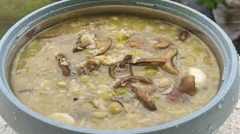

Sizou Changal Mapo

Description
Sizou Changal Mapo is a comforting and substantial stew where tender pieces of meat (often pork) are slow-cooked with
rice and an array of indigenous greens. The rice is cooked to a soft, almost porridge-like consistency, creating a thick
and flavorful base. The dish is infused with the unique flavors of local herbs and dry yam leaves, giving it a distinct
earthy and savory taste.
Ingredients
- Meat (pork, chicken, or beef), cut into pieces
- Rice
- Dried yam leaves
- Local greens (e.g., spinach, mustard greens)
- Onions, garlic, and chilies
STEPS
- Prepare the Meat: Cut the meat into bite-sized pieces and wash thoroughly.
- Sauté Aromatics: Sauté chopped onions, garlic, and chilies in a pot until fragrant.
- Brown the Meat: Add the meat to the pot and brown it on all sides.
- Add Rice and Water: Add the rice and sufficient water to the pot, ensuring the rice will cook to a soft consistency.
- Incorporate Greens: Add the dried yam leaves and local greens to the pot.
- Simmer: Bring the mixture to a boil, then reduce heat and simmer until the rice is very soft and the meat is tender.
- Season and Serve: Season with salt to taste and serve hot.
Home